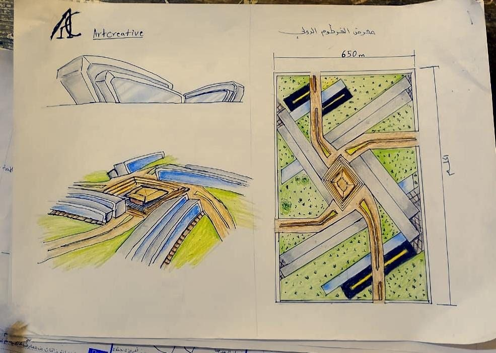
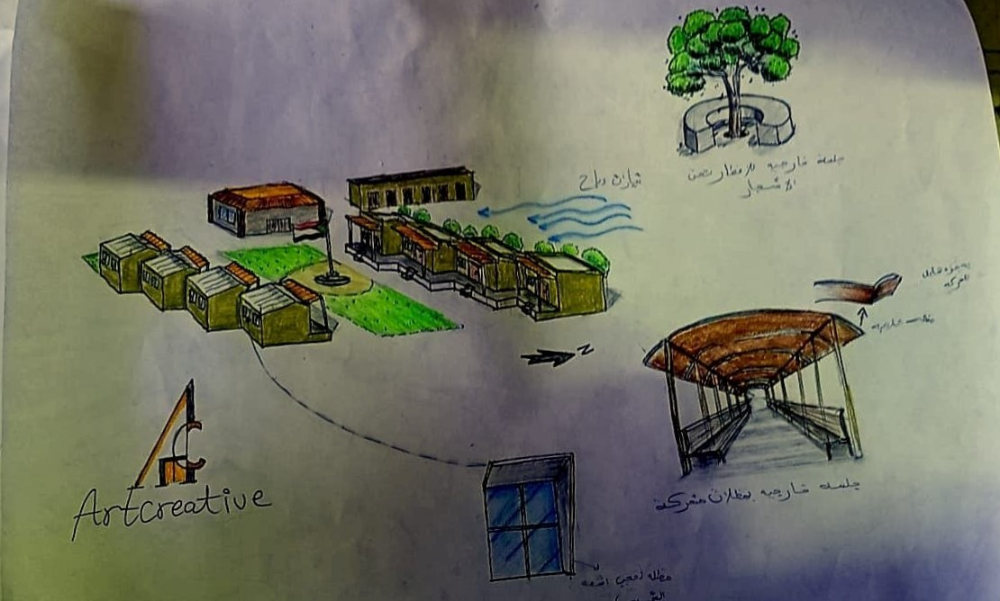
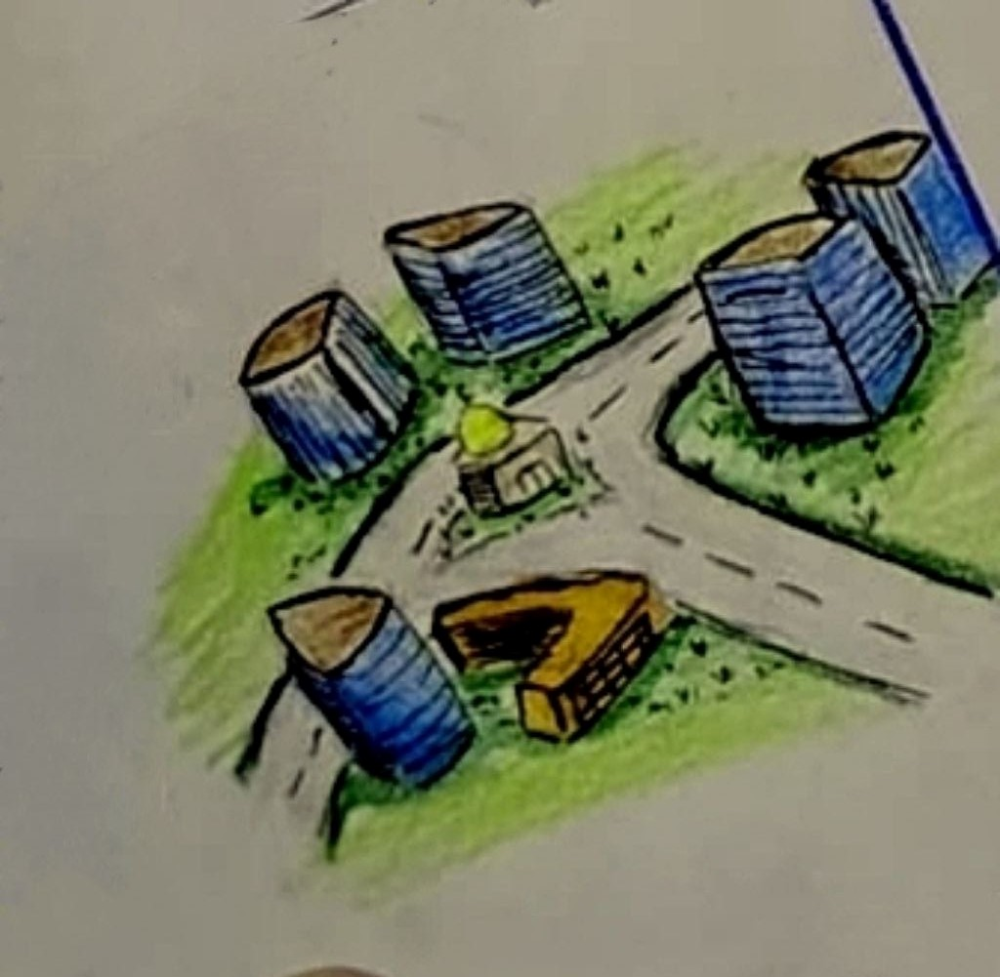
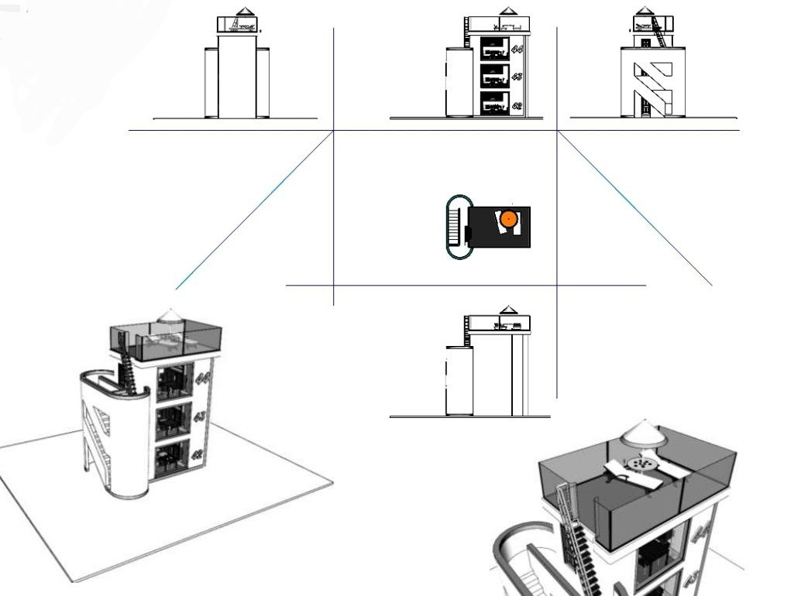
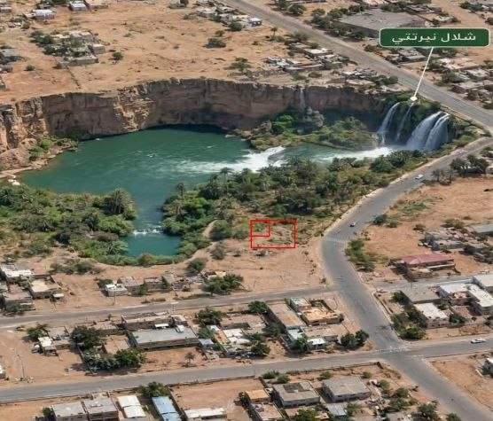

العمارة بوصفها تجربة متكاملة
من الفكرة إلى الفراغ، ومن التصميم إلى الأثر.
في Artcreative Architecture Studio، لا نرى العمارة مجرد تصميم للمباني، بل منظومة متكاملة تجمع الإبداع والهندسة والتخطيط والاستدامة والإدارة، بهدف صناعة بيئات استثنائية تترك أثرًا في حياة الإنسان.
ننطلق من فهم احتياجات المستخدم وطبيعة المكان لنطوّر حلولًا معمارية تراعي الوظيفة والهوية والجوانب البيئية، وتسعى إلى تحقيق التوازن بين الجمال والكفاءة.
رؤيتنا
استكشاف إمكانات العمارة وصناعة بيئات مبتكرة تتجاوز المألوف، وتنسجم مع الإنسان والمكان، وتستجيب لتحديات المستقبل.
رسالتنا
تطوير أفكار معمارية متكاملة تجمع بين الإبداع والدقة الهندسية والاستدامة، وتحول احتياجات المستخدمين إلى حلول تصميمية واضحة وقابلة للتطوير.
أهدافنا
تعزيز جودة التصميم، وتكامل التخصصات، والبحث عن حلول مبتكرة، وتطوير بيئات معمارية تحقق الكفاءة الوظيفية والراحة والوعي البيئي.
مجلس الإدارة والقيادة الإبداعية
يقوم Artcreative على رؤية متعددة التخصصات، تتكامل فيها القيادة التنفيذية والتصميم المعماري والعمارة الداخلية والتطوير العمراني والاستدامة والابتكار وإدارة المشاريع.
يوضح هذا الهيكل مجالات المسؤولية القيادية لكل عضو، ويعكس التوجه نحو تنظيم العمل وتكامل الخبرات وتطوير هوية معمارية متماسكة.
Ahmed Abdallah
الرئيس التنفيذي للمكتب
يتولى أحمد عبدالله قيادة العمليات الاستراتيجية للمكتب، والإشراف على الأداء المؤسسي وتطوير الشراكات المهنية، مع ضمان تكامل الإدارات وتحقيق الأهداف بعيدة المدى. ويقود تحويل رؤية Artcreative إلى منظومة عمل متكاملة تجمع التميز المعماري بالكفاءة الإدارية.
Aseel Dawsar
الرئيسة التنفيذية للعمارة الداخلية
تقود أسيل دوسر الرؤية الخاصة بالعمارة الداخلية وتجربة المستخدم، وتعمل على تطوير بيئات داخلية متكاملة تمزج بين الجمال والوظيفة والراحة النفسية. وتشرف على ابتكار حلول تصميمية تعكس هوية المكان وتمنح مستخدميه تجربة مميزة.
Abdallah Mohammed
الرئيس التنفيذي للتصميم المعماري
يقود عبدالله محمد التوجه المعماري للمشاريع، ويشرف على تطوير المفاهيم التصميمية وتحويلها إلى حلول معمارية متكاملة. ويعمل على تحقيق التوازن بين الهوية البصرية والوظيفة والاستدامة، مع الحفاظ على المستوى الإبداعي الذي يميز Artcreative.
Abdullah Al-Khidir
الرئيس التنفيذي للتطوير العمراني
يتولى عبدالله الخضر قيادة الرؤية العمرانية للمكتب، وتطوير الحلول المتعلقة بتخطيط المدن والمجتمعات السكنية والبيئات الحضرية. ويركز على بناء علاقات متوازنة بين الإنسان والمكان، وتطوير بيئات عمرانية أكثر كفاءة واستدامة وقدرة على الاستجابة للتغيرات المستقبلية.
Wafaa Hassan
الرئيسة التنفيذية للاستدامة والبحث المعماري
تقود وفاء حسن التوجه البحثي والبيئي للمكتب، وتعمل على دمج مبادئ الاستدامة في مراحل التصميم المختلفة. وتشرف على دراسة الأداء البيئي للمباني وكفاءة الموارد والاستراتيجيات المناخية، بهدف تطوير حلول معمارية مسؤولة تجاه الإنسان والبيئة.
Rayan Al-Sadig
الرئيسة التنفيذية لتطوير التصميم
تقود ريان الصادق عملية تطوير المشاريع من المفهوم الأولي إلى الحل التصميمي المتكامل، وتعمل على ضمان الترابط بين الأفكار المعمارية والمتطلبات الوظيفية والتقنية. كما تشرف على مراجعة تطور التصميم وتنسيق المخرجات بما يحافظ على جودة المشاريع واتساقها.
Fouad Zaroog
الرئيس التنفيذي للرؤية الإبداعية
يقود فؤاد زروق الرؤية الفكرية والإبداعية لـ Artcreative، ويعمل على صياغة فلسفة معمارية تتجاوز الأشكال التقليدية نحو اكتشاف إمكانات جديدة في العلاقة بين الإنسان والفراغ والبيئة المبنية. ويتولى توجيه الهوية الإبداعية للمكتب واستكشاف الاتجاهات المعمارية المستقبلية، بهدف تحويل الأفكار غير المألوفة إلى تصورات معمارية ملموسة.
Muzn Al-Sadig
الرئيسة التنفيذية للإظهار والتصور المعماري
تقود مزن الصادق استراتيجية التصور البصري للمشاريع، وتشرف على تحويل الأفكار والمخططات المعمارية إلى تجارب بصرية واقعية ومؤثرة. وتعمل على تطوير لغة بصرية متكاملة تعكس جودة التصميم وتساعد على توصيل الأفكار المعمارية للعملاء والشركاء.
Hatoon Mohamed
الرئيسة التنفيذية للتقنيات والتوثيق المعماري
تقود هتون محمد الجانب الفني والتوثيقي للمشاريع، وتعمل على ضمان الدقة والتكامل بين الرسومات المعمارية والتفاصيل التنفيذية والمتطلبات التقنية. وتهدف إلى تحويل الأفكار التصميمية إلى وثائق واضحة ومنظمة تدعم جودة التنفيذ وتحد من التعارضات الفنية.
Hiba Khalid
الرئيسة التنفيذية لاستراتيجية المشاريع وتسليمها
تقود هبة خالد استراتيجية إدارة المشاريع ومتابعة مراحلها، وتعمل على تنظيم الموارد والأولويات والجداول الزمنية، وتعزيز التنسيق بين التخصصات المختلفة. وتركز على ضمان انتقال المشاريع بكفاءة من مرحلة التخطيط إلى مراحل التطوير والتسليم.
Yaqeen Ahmed
الرئيسة التنفيذية للابتكار المعماري
تقود يقين أحمد مسار الابتكار واستكشاف الأفكار المعمارية الجديدة، وتعمل على تطوير مفاهيم تستجيب للتحولات الاجتماعية والتقنية والبيئية. وتهتم بإعادة التفكير في الأشكال والفراغات وطرق استخدام المباني، بهدف تقديم حلول غير تقليدية تعزز هوية Artcreative وتفتح آفاقًا تصميمية جديدة.
Shahad Al-Duwaida
الرئيسة التنفيذية للتجربة المعمارية
تتولى شهد الدويدة تطوير الرؤية المتعلقة بتجربة الإنسان داخل الفراغات المعمارية، والعمل على ابتكار بيئات تجمع بين الجمال والوظيفة والراحة النفسية. وتركز على فهم العلاقة بين الإنسان والمكان، وتحويل الاحتياجات اليومية إلى تجارب معمارية متكاملة تمنح المساحات قيمة تتجاوز شكلها المادي.
Executive Leadership & Creative Board
Artcreative Architecture Studio
مشاريعنا المعمارية
أفكار تصميمية تتعامل مع الوظيفة والمكان والبيئة بوصفها عناصر مترابطة.

معرض الخرطوم الدولي
رؤية تصميمية متكاملة تسعى إلى الجمع بين الحداثة والهوية المحلية، وإنشاء بيئة تجارية وثقافية قادرة على استيعاب الفعاليات والمعارض وتوفير تجربة واضحة ومريحة للزوار.
المخطط العام
- واجهة رئيسية مقترحة بعرض 650 مترًا، وفق التصور التصميمي للمشروع.
- تنظيم محوري للحركة يربط المداخل ومناطق العرض والخدمات، مع الفصل بين مسارات المركبات والمشاة حيثما أمكن.
- مساحات خضراء ومناطق مفتوحة لتعزيز جودة البيئة الخارجية وراحة الزوار.
التصميم المعماري
- أجنحة ذات كتل هندسية معاصرة وأسقف مدروسة للاستجابة للمناخ.
- استخدام الزجاج عالي الأداء ومواد البناء المناسبة لتحقيق التوازن بين الإضاءة وتقليل الكسب الحراري.
- ساحة مركزية تربط أجزاء المعرض بصريًا ووظيفيًا.
الخلاصة: يهدف المشروع إلى تقديم وجهة متكاملة للمعارض والفعاليات، تجمع بين الكفاءة التشغيلية والجاذبية البصرية وتعزيز الحضور الحضري للخرطوم.

المشروع المدرسي
رؤية معمارية معاصرة تهدف إلى تطوير بيئة تعليمية واستكشافية مستدامة، تجمع بين توزيع الكتل التعليمية والفراغات التفاعلية المفتوحة، لتشجيع التعلم والإبداع وتحقيق التوازن البيئي والحراري.
المخطط العام والتوزيع الفراغي
- توزيع الكتل التعليمية في مجموعات مترابطة تسمح بمرونة الاستخدام وإمكانية التوسع المستقبلي.
- توجيه المباني وفق دراسة اتجاهات الشمس والرياح السائدة ومتطلبات الإضاءة والتهوية.
- إدخال مسارات خضراء ومناطق مفتوحة بين المباني لتحسين المناخ المحلي.
- ربط الفصول الدراسية بالجلسات الخارجية لتشجيع التعلم التفاعلي خارج حدود الفصل.
التصميم والمعالجات البيئية
- تشكيل كتل وأسقف وواجهات تساعد على توفير الظلال والحد من التعرض المباشر للشمس.
- استخدام كاسرات الشمس والمظلات وفق دراسة اتجاه الإشعاع الشمسي وزوايا الظلال.
- توفير ممرات مفتوحة وفواصل بين الكتل تدعم التهوية الطبيعية المتقاطعة.
- تصميم جلسات للمطالعة والعمل الجماعي حول المساحات المزروعة وتحت المظلات.
الخلاصة: يتعامل المشروع مع المدرسة بوصفها منظومة تعليمية وبيئية متكاملة، يتحول فيها الفراغ المعماري إلى عنصر داعم للتعلم والتفاعل والراحة.

المجمع السكني المتكامل
تصور تخطيطي لمجمع سكني يضم وحدات سكنية ومسجدًا وروضة أطفال، ويهدف إلى دمج الاحتياجات اليومية للسكان في بيئة مترابطة تدعم التفاعل الاجتماعي وسهولة الوصول إلى الخدمات الأساسية.
المخطط العام والحركة
- شبكة طرق ومسارات منظمة تربط الوحدات السكنية بالخدمات والمداخل الرئيسية.
- توزيع المسجد والروضة في مواقع مدروسة لتسهيل الوصول إليهما من المناطق السكنية المحيطة.
- مراعاة الفصل الآمن بين حركة المركبات ومسارات المشاة، خصوصًا بالقرب من الروضة.
التصميم المعماري والبيئي
- تشكيل الكتل السكنية وفق متطلبات الخصوصية والإضاءة والتهوية والراحة الحرارية.
- تصميم المسجد والروضة بما يتناسب مع الوظيفة الروحية والتعليمية ومتطلبات المستخدمين.
- دمج المساحات الخضراء ومناطق الجلوس لتحسين المشهد البصري وتوفير مناطق للتفاعل الاجتماعي.
الخلاصة: يسعى المشروع إلى تحقيق التوازن بين الراحة السكنية والخدمات المجتمعية، ضمن بيئة عمرانية مترابطة تراعي الإنسان والمكان.

التصميم المستجيب للمناخ
مشروع يركز على دراسة العلاقة بين المبنى والشمس، من خلال تحليل الظلال ودراسة مسار أشعة الشمس، وإعادة توجيه المبنى لتحقيق استفادة أفضل من الإضاءة الطبيعية والحد من التعرض المباشر للشمس في الأوقات التي ترتفع فيها درجات الحرارة.
التحليل الشمسي والتوجيه
- دراسة مسار الشمس وزوايا سقوط أشعتها لفهم تأثيرها في المبنى خلال أوقات اليوم.
- تحليل الظلال الناتجة عن الكتلة المعمارية لتحديد المناطق المعرضة للإشعاع الشمسي والمناطق التي تستفيد من الظل.
- دراسة أثر تغيير اتجاه المبنى في تقليل التعرض المباشر للشمس وتحسين الأداء المناخي.
الأداء البيئي والراحة الحرارية
- تحسين الاستفادة من الإضاءة الطبيعية مع الحد من اكتساب الحرارة غير المرغوب فيها.
- توظيف نتائج التحليل الشمسي في اتخاذ قرارات تصميمية أكثر استجابة للمناخ.
- السعي إلى تحسين الراحة الحرارية وتقليل الاعتماد على وسائل التبريد الاصطناعية.
الخلاصة: يوضح المشروع أهمية دمج التحليل الشمسي والتوجيه المعماري في عملية التصميم، للوصول إلى مبانٍ أكثر توافقًا مع المناخ وأكثر كفاءة في استخدام الطاقة.

مسكن أسرة في نيرتتي
مشروع سكني قيد التصميم والتطوير، يهدف إلى إنشاء مسكن أسرة في مدينة نيرتتي، الواقعة في إقليم جبل مرة بغرب السودان، ضمن بيئة طبيعية تتميز بالتضاريس الجبلية والمشاهد الطبيعية والشلالات القريبة من الموقع.
دراسة الموقع والهوية المعمارية
- دراسة الخصائص الطبيعية والمناخية للموقع لفهم تأثير التضاريس والبيئة المحيطة في التشكيل المعماري.
- تطوير تصميم جديد من البداية يستجيب لاحتياجات الأسرة ومتطلبات الحياة اليومية.
- استلهام الهوية المعمارية السودانية مع مراعاة خصوصية المكان وطبيعة محيطه.
الاستدامة والتصميم البيئي
- دراسة توجيه المبنى للاستفادة من الإضاءة والتهوية الطبيعية وتحسين الراحة الحرارية.
- مراعاة تضاريس الموقع عند تشكيل الكتل المعمارية وتنظيم العلاقة بين المبنى والبيئة الطبيعية المحيطة.
- دراسة استخدام المواد المناسبة للبيئة المحلية بما يدعم الاستدامة ويحد من استهلاك الطاقة.
الخلاصة: يسعى المشروع إلى تصميم مسكن يجمع بين احتياجات الأسرة والهوية السودانية والاستجابة للبيئة الطبيعية، مع التركيز على الاستدامة والراحة والانسجام مع المكان.
حالة المشروع: قيد التصميم والتطوير.
تُعرض هذه المشاريع بوصفها أعمالًا وتصوّرات معمارية ضمن محتوى الموقع. وتخضع المواصفات والأبعاد النهائية للدراسة والتحقق الهندسي بحسب متطلبات كل مشروع.
هل تتوافق رؤيتنا مع تطلعاتك؟
إذا وجدت في أفكارنا ومشاريعنا ما يتوافق مع تطلعاتك، يمكنك التواصل معنا للتعرف على المكتب ومناقشة الأفكار والتعاون في المجالات المعمارية.